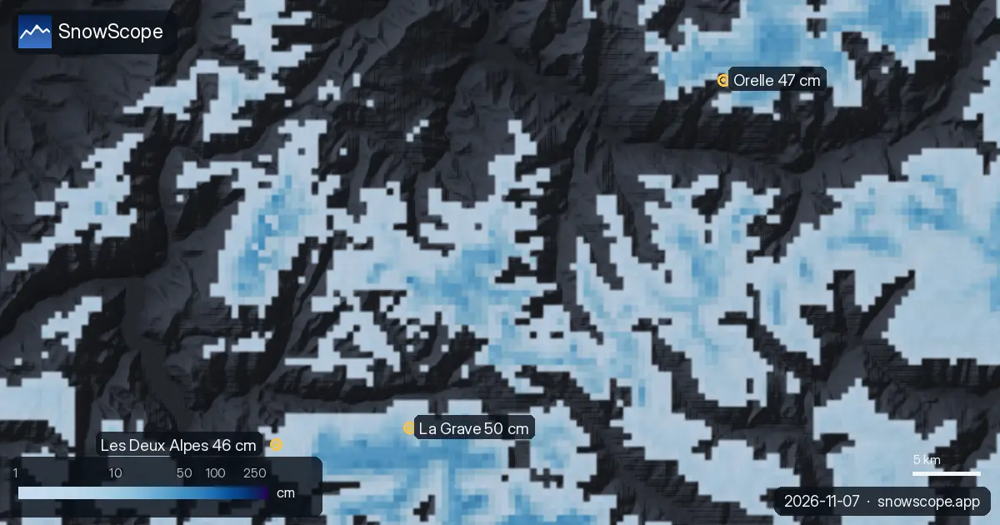
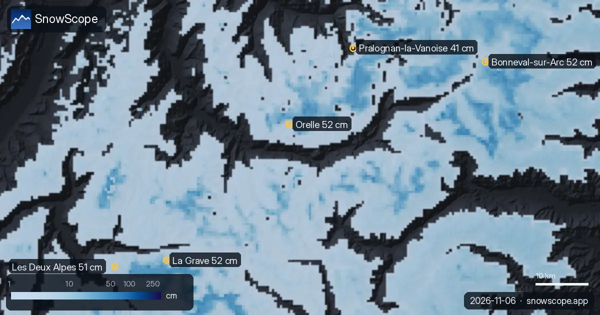
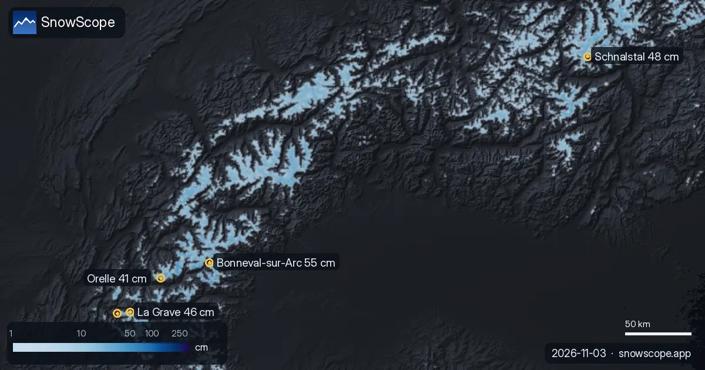

Alpen: Mehr oder weniger Schnee als üblich? (7. November)
Wir haben den Schnee von heute in 3 Skigebieten in den Alpen mit demselben Datum in jedem der letzten 46 Winter verglichen. 0 liegen deutlich über dem Normalwert.
Die Live-Schneeprognose für La Grave in der SnowScope-AppSchneehöhen, Pulverschnee-Alarme und 3D-Karte, gratis.
Im Vergleich mit früheren Wintern
Auf 3.369 m in La Grave ist die Saison spät dran: Unser Modell zeigt nur 3 cm, weniger als die üblichen 38 cm. Nur 9 der letzten 46 Winter hatten dort am 7. November weniger Schnee.
Auf 2.779 m in Orelle ist die Saison spät dran: Unser Modell zeigt nur 2 cm, weniger als die üblichen 28 cm. Nur 6 der letzten 46 Winter hatten dort am 7. November weniger Schnee.
Auf 2.397 m in Les Deux Alpes ist die Saison spät dran: Unser Modell zeigt nur 1 cm, weniger als die üblichen 14 cm. Nur 8 der letzten 46 Winter hatten dort am 7. November weniger Schnee.
| Skigebiet | Schneehöhe | Neuschnee, 72 h | Erwartet, nächste Tage | Gipfel |
|---|---|---|---|---|
| La Grave | 50 cm | 20 cm | 32 cm | 3.543 m |
| Orelle | 47 cm | 12 cm | 21 cm | 3.221 m |
| Les Deux Alpes | 46 cm | 15 cm | 33 cm | 3.511 m |
Wo heute Schnee liegt
Von diesen Skigebieten hat La Grave heute den meisten Schnee in den oberen Hängen, etwa 50 cm; danach folgen Orelle 47 cm und Les Deux Alpes 46 cm.
661 von 1.178 Skigebieten in den Alpen haben heute Schnee in den oberen Hängen, und unser Modell zählt 32.120 km² Schneefläche.
Die Werte der Skigebiete sind Modellschätzungen für die oberen Hänge; Messstationen messen an einem Punkt, am angegebenen Tag.
Was als Nächstes kommt
Bis zum 10. November ergibt unsere Prognose 33 cm in Les Deux Alpes, 32 cm in La Grave und 21 cm in Orelle.
Prognosen für einige Tage können sich ändern: Schau am Tag vor der Abfahrt noch einmal auf die Karte.
Tipps für Skifahrer
- Such den Schnee weit oben und an Nordhängen: Dort hält er am längsten, Südhänge verlieren ihn zuerst in der Sonne.
- Schnee auf der Karte heißt nicht, dass das Skigebiet offen ist: Prüfe Lifte und Öffnungstermine auf der Website des Skigebiets.
- Früher Schnee ist dünn. Bleib auf offenen, präparierten Pisten: Steine und Gras liegen oft knapp darunter.
- Stell in der SnowScope-App einen Pulverschnee-Alarm ein, damit du weißt, wann La Grave Neuschnee bekommt.
Zu diesen Zahlen
Die Schneehöhen der Skigebiete sind der meiste Schnee in den oberen Hängen laut SnowScope-Schneemodell (etwa 1 km, Lauf vom 6. November); es sind Schätzungen für eine Fläche, keine Messung an einem Punkt. Werte von Messstationen sind Messungen am angegebenen Tag. Prognosen können sich ändern. Lies vor dem Freeriden immer den offiziellen Lawinenlagebericht.
Offizielle Lawinenlageberichte: Météo-France BERA
Diesen Bericht zitieren
Für Forschung, Lehre oder Presse: Zahlen und Grafiken sind unter CC BY 4.0 mit dieser Quellenangabe frei nutzbar.
SnowScope (2026), Alpen: Mehr oder weniger Schnee als üblich? (7. November), https://snowscope.app/blog/de/2026/11/alps-snow-vs-past-winters-7-november-2026.html, abgerufen am 2026-11-07
SnowScope (Atlas Labs). (2026, November 7). Alpen: Mehr oder weniger Schnee als üblich? (7. November). SnowScope snow reports. https://snowscope.app/blog/de/2026/11/alps-snow-vs-past-winters-7-november-2026.html
BibTeX
@misc{snowscope2026alpssnowvspastwinters7no,
author = {{SnowScope (Atlas Labs)}},
title = {Alpen: Mehr oder weniger Schnee als üblich? (7. November)},
year = {2026},
month = nov,
howpublished = {\url{https://snowscope.app/blog/de/2026/11/alps-snow-vs-past-winters-7-november-2026.html}},
note = {Published 2026-11-07 13:14 UTC; accessed 2026-11-07}
}· CC BY 4.0 · Methoden, Daten und Werkzeuge →
La Grave: Schnee und Temperatur nach Höhe, dieser Winter vs letzter (Werkzeuge) →
Weitere Schneeberichte

Bonneval-sur-Arc (Frankreich) hat heute den meisten Schnee in den Alpen, mit etwa 52 cm in den oberen Hängen. Es folgen La Grave mit 52 cm und Orelle …

Am meisten Schnee in den Alpen liegt in Bonneval-sur-Arc: etwa 55 cm in den oberen Hängen, laut unserem Schneemodell. Danach kommen Schnalstal …

Sieben Tage in der Silvretta Arena, einer nach dem anderen: wo der Schnee liegt, wann man nach Samnaun fährt und was 46 vergangene Winter über Ischgls Schnee auf drei Höhen sagen.